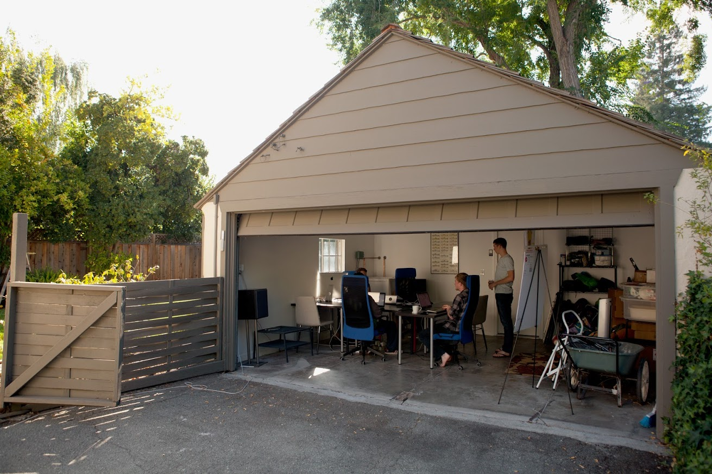

The History of etcd
December 11, 2018
• By alexhandy
Today,
Red Hat and the CoreOS team are contributing etcd to the Cloud Native Computing Foundation (CNCF). This move puts the popular consensus-based key-value store’s logos, domains, cloud infrastructure, hosted services and other project property into a neutral non-profit. This move helps the over 400 external contributors and thousands of users from around the world have confidence in the ongoing independence of the project.
From humble beginnings in a garage, to forming the foundation for a worldwide revolution in container-based cloud computing, etcd is now ready for the next step in its journey to open source success. With the help of the CNCF, we plan to continue to improve and optimize etcd so that it can continue to work reliably at the core of your container infrastructure, and your applications. And for a consensus-based database, that’s about as appropriate an end as we could have hoped for the project.
The thing about consensus is that everyone has to agree on it. And after five years of development, it sure feels like everyone has agreed on etcd. While there are many other databases out there, etcd continues to fill a void around consistency, allowing it to function as the beating heart of a Kubernetes cluster.
Because etcd is built on top of the Raft consensus algorithm, it’s effective for keeping track of fast-moving information crucial to running a container orchestration system. If a container is locked and must be quickly moved to another area and restarted, etcd is able to be certain about that containers location and IP address because it’s storing a consensus on that information.
Brandon Philips was one of the creators of etcd, along with Alex Polvi and Xiang Li. Said Philips of the original effort to design etcd in 2013: “We wanted Container Linux to be able to essentially reboot one machine at any time, but we wanted people to be able to have application uptime. So we needed to run multiple copies of Container Linux and have some sort of coordination so an entire user application wouldn’t go down at once. This is a pretty well understood coordination problem, and really the way we worked to solve this is through a consensus database.”
Philips and Li looked into Google Chubby, a proprietary database inside Google which had made it outside as a technology paper. They also looked at Apache Zookeeper, which performs similar actions, but had issues around scalability, correctness, and runtime reconfiguration.
“We wanted something cloud-capable; something that could be reconfigured on the fly. On the cloud at any point machines are coming and going, IP addresses are changing and you may need to resize the environment. We needed a database that could be reconfigured live without going down. Also you don’t often stand up large infrastructure with gigabytes of RAM and Zookeeper, at the time, required quite a bit of resources of its own. So we wanted something that scaled down well. A further hurdle was the Zookeeper RPC API, Thrift, being rarely used outside of Zookeeper; this meant you couldn’t use common tools like curl to interact with it. We wanted something dynamically reconfigurable that could scale down and was easy to develop against because it used HTTP+JSON. So, Alex Polvi and I sat down and sketched out a readme, and Xiang started working on it in his 2013 summer internship,” said Philips.
While etcd was initially used exclusively by CoreOS’ early attempts at a container orchestration system, called fleet, it quickly gained traction from the community in other uses. “We saw a ton of other people pickup etcd, from DNS servers to load balancers to feature flag tools. The traction showed us that we were onto something. When Kubernetes began growing two years after etcd and they chose etcd as their primary key value store, that 10X’d the community over the next year or so,” said Philips.
Another side of the story of etcd is the Raft consensus algorithm that it implements. This algorithm was created by Diego Ongaro as an attempt to make a provably correct and easier to understand consensus algorithm for use by practitioners and researchers alike. Ongaro was a regular advisor as Li developed a Go Raft library while Ongaro completed his doctorate thesis on consensus algorithms. And it was a nice side benefit that Li was thanked in the Raft doctoral dissertation alongside CoreOS colleagues Blake Mizerany, and Yicheng Qin; together they helped to simplify the membership change algorithm.
Today, the project has racked up over 400 contributors, and has even been adopted by companies that theoretically compete with Red Hat. Such is the power of open source that even though Kubernetes and etcd both have thousands of users and multiple commercial products built on top of them, the underlying collaboration on those projects remains open and non-competitive.
Donating etcd to the CNCF will allow this to remain the case going forward. With so many major enterprises already utilizing etcd (Google, NTT, Salesforce and Tencent) and every major cloud provider offering a Kubernetes service, we expect the project to only grow further now that it has been donated to the CNCF.
“When we introduced etcd, we wanted it to be this ubiquitously available component of a larger system. Part of the way you get ubiquity is to get everyone using it. As it goes into the CNCF, maintainers from Amazon, Alibaba, Google, and Red Hat all remain on the maintainer list, and etcd is deployed in every major cloud provider now. It’s all part of their products. Having somebody stewarding the copyrights, DNS and more seems like the reasonable next step,” said Philips.
That’s not to say there aren’t still fond memories locked away inside the etcd developers’ heads. Indeed, when the project began, Li, Polvi and Philips had to think long and hard about just how much of a commitment they were willing to make to the project. After all, a database takes years to become stable enough for production use. It would seem those years are now complete, however.
Getting to stable meant pushing the limits of just about everything else etcd relied on, as well. Philips tells the story of one bug that was baffling the team and the customer for a good amount of time.
“etcd developer Anthony Romano found this one crash scenario that was baffling, and was reliably reproducible, and it was having to do with sending pause signals to etcd interrupting whatever work etcd is doing. After resuming etcd this test case would find write ahead log corruption. In the end after a lot of investigation it was a bug in the Linux kernel
for handling syscall interruption on tmpfs. This was completely unexpected,” said Philips. This bug lead to a Linux kernel patch.
Now that etcd is a CNCF project, Philips has a few ideas for work he’d like to see taken on. “I’d love to have the project go through another security audit. I’ve been working with the CNCF to setup security audits for Kubernetes. I’d also like to see it get a correctness audit. Other things I’d like to see include getting more resources around a number of services that the etcd community runs. Discovery.etcd.io, which helps people bring up etcd clusters more easily, and has been a free hosted service CoreOS has been running for 4 or 5 years, could use additional support. Having that run by a larger team will be helpful,” said Philips.
Lastly, he’d like to see the usability of the project improved. “We’ve gotten a lot of feedback that running an etcd cluster can be difficult, so I think having some people focusing on that would be great. At its core, etcd is a reliable and well deployed system, but there are always things you can do to make it easier for new people to use the database.”
Want to help on the etcd project? Dive in and contribute to the etcd codebase. Some areas that could use some help include working toward a streamlined etcd cluster maintenance for Kubernetes or the cluster downgrade support to pair with etcd’s extensive runtime upgrade support.